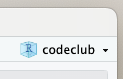
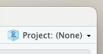
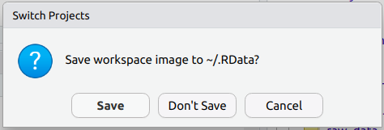

203 /R Basics 2: Scripts and Objects
r-basics
1 Introduction
Recap of last week
Last week, we installed R and RStudio, learned about the distinction between the two, familiarized ourselves with RStudio, learned about “working directories” and RStudio Projects, and had our first interactions with R by using it as a calculator.
Learning objectives for today
A little more basic interaction with R: missing prompts and data types
Writing code in R scripts instead of the console, and commenting your code
Using and naming R objects, and (not) saving your environment
Setting up
If you created an RStudio Project for Code Club last week, then be sure to have that Project open before we get started. When you start RStudio, it may well have already opened that project for you (check the top-right corner, and see the screenshots below) — if not, click File (top menu bar) > Recent Projects, and select your Project for Code Club from the list.


If you don’t have an RStudio Project, no worries. We’ll be saving a file today, but you can always save it in an appropriate directory on the fly.
2 A little more basic interaction with R
2.1 The R prompt, revisited
The > sign in your console is the R “prompt”. It indicates that R is ready for you to type something.
When you are not seeing the > prompt, R is either busy (because you asked it to do a longer-running computation) or waiting for you to complete an incomplete command.
Type the following into your console, and press Enter (called Return on a Mac, but you get the idea):
You should notice that your prompt turned into a +.
What is going on here? (Click for the answer)
R is waiting for you to finish the command, since you typed an incomplete command: something has to follow the division sign /.
To get out of this situation, one option is to try and finish the command (in this case, by typing another number) — but here, let’s practice another option: aborting the command by pressing Esc.
While it was obvious here that our command was incomplete, you will often type incomplete commands without realizing you did so (typical cases include forgetting a closing parenthesis )). Aborting and fixing the command in full is often the way to go, especially if you’re writing code in a script (as we’ll do below).
2.2 R data types
If we just type a number and press Enter…
203[1] 203… then R will simply print the number back to us.
Under the hood, R is calling a function called print()1, and we saw an example of this last week, too — typing the name of an object will print it’s value:
x <- 5
x[1] 5Rather than a number, what if we want R to print back to us some text, which in programming lingo is called a “character string”?
FantasticError in eval(expr, envir, enclos): object 'Fantastic' not foundWhat seems to be going wrong? (Click for the answer)
Whenever you type a character string, R expects to find an object with that name (we saw our first object x last week, and will talk more about them today).
When no object exists with that name, R will throw an error.
We can get R to print character strings back to us, and use them in other ways, as long as they are quoted:
"Fantastic"[1] "Fantastic""Code Club"[1] "Code Club"So, R treats numbers and character strings differently: unlike numbers, character strings need to be quoted. This avoids confusion with objects because unquoted character strings are assumed to be objects, and also allows for “special characters” like spaces.
TipQuote types
Double quotes ("Fantastic") and single quotes ('Fantastic') can be used interchangeably in R. Double quotes are preferred by most “style guides”.
A little more on R’s main “data types”:
Numbers are by default of the data type
numeric(and can also beinteger- whole numbers only)Character strings are by default of the data type
character(and can also befactorfor categorical data)The final main data type is
logical, which can be eitherTRUEorFALSE.
3 Exercises 1
A) Which of the following do you think would work and which would return an error:
session_topic <- "introduction"session_topic <- introductionTry both to see which works and what error you get for the other one. Also, try to describe in words what the correct line of code is doing.
Solution (click here)
The first of the two options was correct R code, while the second returns an error.
In general, keep in mind that unquoted character strings represent objects whereas quoted character strings are “literals”. Here, we wanted to assign the literal string "introduction" to the object session_topic — so the former should be quoted and the latter not.
An error is produced when you run the second option, because the object introduction does not exist (unless, of course, you had created an object of that name!):
session_topic <- introductionError in eval(expr, envir, enclos): object 'introduction' not foundB) Having run the code above, which of the following would make R print "introduction"?
"session_topic"session_topicSolution (click here)
The second option is the correct one: here, we want to have R print the value of the object session_topic (which we had just created in exercise A), so we shouldn’t use quotes.
session_topic[1] "introduction"C) Do you think the following code would successfully add 5 and 7? If not, what might happen instead?
"5" + "7"Solution (click here)
In the code above, the “numbers” are saved not as numbers (in R lingo: as a numeric) but as character strings (character).
R can’t add character strings, so it will return an error:
"5" + "7"Error in "5" + "7": non-numeric argument to binary operator(Perhaps you expected it to combine/“concatenate” the two strings in some way — this is in fact what Python would do. Or to automatically convert the characters to numbers, since you’re clearly wanting them to be numbers — but it doesn’t do that either.)
D) (Bonus) Execute the following code and check its output:
TRUE + FALSEHad you expected this result? If not, can you make sense of it: the fact that it works, the specific results, and the fact that we are not using quotes in the code.
And based on your deliberations, what do you expect the following code to return?
TRUE + TRUESolution (click here)
Logicals (
TRUEandFALSE) can be used as numbers, in which caseTRUEis equivalent to 1, andFALSEis equivalent to 0.Therefore,
TRUE + FALSEwill return1, andTRUE + TRUEwill therefore return2.Logicals (
TRUEandFALSE) are made up of letters but are not character strings, so they shouldn’t be quoted.
4 R scripts
4.1 The editor pane
Jess showed us the four quadrants of RStudio last week:

One of those contains a “Source Editor” pane, as in a Text Editor. Here, we can open and edit all sorts of text files — including R scripts. This quadrant will disappear if you have no files open:
Create and open a new R script by clicking
File(top menu bar) >New File>R Script.
4.2 Why use a script?
An R script is a text file that contains R code.
So far, we have been typing commands directly into the R console. But it’s a good idea to write and save most of our code in scripts.
This helps us keep track of what we’ve been doing, especially in the longer run, and to re-run our code after modifying input data or one of the lines of code.
TipInteractive scripts
For those of you who are familiar with the notion of a script from other contexts or programming languages — saving our code as a script does not mean that we necessarily need to run the entire script all at once.
In R, it is instead most common to write and run code interactively, often line by line.
4.3 Saving the script
Let’s save this new script right away…
Click
File>Save As
… and give it a descriptive name like codeclub_02.R:
You may want to put the script in a folder for Code Club — which should be automatically selected if you are using your Code Club RStudio Project.
Make sure it has the file extension
.R— which should also have been automatically suggested by the pop-up window.
WarningFile extensions
An R script is just a plain-text file and you could also save it with, for example, a .txt extension — this will not break the file, but does have drawbacks.
When you use a .R extension, your computer and RStudio alike will recognize it as an R script. In RStudio, this means you’ll get some formatting that helps when writing your R code, and it can even recognize and warn you about certain errors in your code.
4.4 Sending code to the console
If you write most of your code in a script in the Editor, as we recommended above, wouldn’t it be a hassle to execute it? Do you need to copy-and-paste the code into the console? Luckily not.
Start by by typing another simple calculation, this time in your R script:
203 / 2.54With the cursor still on this line of code in the script, press Ctrl + Enter (or, on a Mac: Cmd + Enter).
The code will be copied to the R console and executed (so you should see the result printed as shown below), and additionally, the cursor will move to the next line in the script.
[1] 79.92126
TipMore on sending code to the console
Note that it doesn’t matter where on the line your cursor is: Ctrl + Enter will always execute the entire line unless you have selected only part of it. (And when you have selected multiple lines of code, it will execute them all.)
To execute a line of code, an alternative to the keyboard shortcut is to click the Run button in the bar right above your script, but we recommend using the keyboard shortcut — it is much faster, at least once you get used to it.
For the rest of this Code Club session, try to write your code in your script, and send it to the console using the keyboard shortcut.
4.5 Commenting
You can use # signs to comment your code:
# Divide by 2.54 to get the wingspan in inches:
203 / 2.54 # Original measurement was in cmAnything to the right of a
#is ignored by R, meaning it won’t be executedYou can use
#both at the start of a line (entire line is a comment) or anywhere in a line following code (rest of the line is a comment)In your R script, comments are formatted differently so you can clearly distinguish them from code
We recommend that you use lots of comments in your R scripts! They are useful not only for others that you may share your code with, but also for yourself when you look back at your code a day, a month, or a year later.
5 R Objects
5.1 Assigning stuff to R objects
As we’ve seen a couple of times now, we can assign a value to an object with the assignment operator <-. A few more examples:
wingspan_cm <- 203
conversion <- 2.54Type that into your script, and use Ctrl/Cmd + Enter twice to send it to the console.
TipThe Environment tab
Recall also that the objects you create get added to your “environment”, which RStudio shows in the Environment tab in the top-right panel — check that wingspan_cm and conversion are indeed there.
After you’ve assigned a number to an object, you can use it in calculations like so:
wingspan_cm / conversion[1] 79.92126Or, similarly:
wingspan_inch <- wingspan_cm / conversion
wingspan_inch[1] 79.92126This illustrates that when you execute code with objects, R substitutes the object name that you provide by its contents under the hood. In other words, the object is just a reference to the underlying value(s).
“Object” is a general term that encompasses R items of any size or complexity:
Objects can also contain character strings, collections of numbers or character strings (including in table or matrix format), and functions.
The above does not mean that “anything goes” — R distinguishes between a limited number of “data structures”, each with their own defined structure. We’ll learn about the most important ones next week.
The objects we created so far are called vectors, which are more commonly thought of as containing a series of values, but in R, can have a length of one2.
TipMore on assignment operators
The keyboard shortcut for the assignment operator is Alt/Option + -.
Note that you can also use = as an assignment operator, as is common in other programming languages. But because = can have other meanings, we recommend sticking with the <- combination.
# This also works to assign the value 5 to x (but we recommend using <- instead)
x = 55.2 Object names
Objects can be given almost any name such as x, current_temperature, or subject_id. Some pointers on object names:
Because R is case sensitive,
wingspan_inchis different fromWingspan_inch!An object name cannot contain spaces — so for readability, you should separate words using:
- Underscores:
wingspan_inch(this is called “snake case”, which we often use in Code Club) - Periods:
wingspan.inch - Capitalization:
wingspanInchorWingspanInch(“camel case”)
- Underscores:
You will make things easier for yourself by naming objects in a consistent way, for instance by always sticking to your favorite case style like “snake case.”3
Object names can contain but cannot start with a number:
x2is valid but2xis not. (There are also some other restrictions that are beyond the scope of this introduction4.)Make object names descriptive yet not too long — this is not always easy!
There are only two hard things in Computer Science: cache invalidation and naming things.
– Phil Karlton
5.3 Saving the environment
Recall that your environment contains all the R objects that you created. When you close R, it will probably ask you whether you want to save your environment (AKA workspace) — something like:

When you do save this, the next time you start R, R will reload your environment so you can pick up right where you left off. While this may seem convenient, we recommend that you don’t do this.
Can you think of a reason why automatically saving and reloading your workspace may not be a good idea? (Click for the answer)
The main reason why this is generally not considered good practice relates to the idea that you should be able to reproduce your environment (and more broadly speaking, your analysis) from the code in your script.
Remember that you can modify your environment either by entering commands in the console directly, or by running them from a script — or even from multiple different scripts. Additionally, it is common to run lines in a script out of order, or write lines in the script that you don’t execute.
Therefore, if you “carry around” the same environment across multiple different sessions, you run a greater risk of not having a reproducible set of steps in your script.
Generally, a better way of working in R than saving your entire environment is to use and save scripts (as we’ve seen today) and to save specific outputs such as tables and plots (as we’ll see soon).
To make RStudio stop asking you about saving your workspace, click Tools > Global Options > General and (un)check the boxes as follows:

TipRestarting R
Taking the ideas about reproducibility a step further, it can be a good idea to occasionally restart R in the middle of working on some code.
That way, you can check whether the code in your script is correct and complete, that you are not relying on code that is not in the script, and so on.
To do so, you don’t need to close and reopen RStudio itself: under Session in the top menu bar, you can click Restart R (and you should also see the keyboard shortcut for it in the menu bar: Ctrl + Shift + F10 (Windows) / Cmd + Shift + 0 (Mac).
6 Exercises 2
A) Why do the following bits of code fail with an error?
session number <- 2Expert_Level <- 3
Expert_levelSolution (click here)
The first fails because an object name cannot contain a space.
The second fails because of a difference in capitalization (Level vs level): recall that R is case sensitive.
B) What will be the value of distance_miles after executing the following lines in R: 31 or 62?
distance_km <- 50
distance_miles <- distance_km * 0.62 # distance_miles is now 31
distance_km <- 100
distance_miles # What is the value of distance_miles now?Come up with an expectation, then run the code above and see if you were right. What does this tell you about “linkage” between objects in R?
Solution (click here)
Objects don’t get “linked” to each other at all in R.
In other words, distance_miles was really assigned the outcome of distance_km * 2, which is 31, rather than its “formula”.
Therefore, distance_miles wasn’t (and couldn’t be!) “updated” after we changed the value of distance_km, and continued to be 31:
distance_km <- 50
distance_miles <- distance_km * 0.62 # distance_miles is now 31.07
distance_km <- 100
distance_miles # What is the value of distance_miles now?[1] 31Attribution
This was modified after material from The Carpentries, especially from this Data Carpentry workshop and this “R for Ecology” workshop.
Footnotes
We’ll talk about functions soon, likely next week.↩︎
Objects that contain a single value are a distinct data structure called “scalars” in some languages, and are more informally also called “variables”.↩︎
It is also recommended to use nouns for variable names, and verbs for function names. For more, two popular R style guides are Hadley Wickham’s and Google’s.↩︎
For example, there are some names that cannot be used because they are the names of fundamental keywords in R (e.g.,
if,else,for, see here for a complete list). In general, it’s also best not to use the names of existing functions, even though this is possible.↩︎